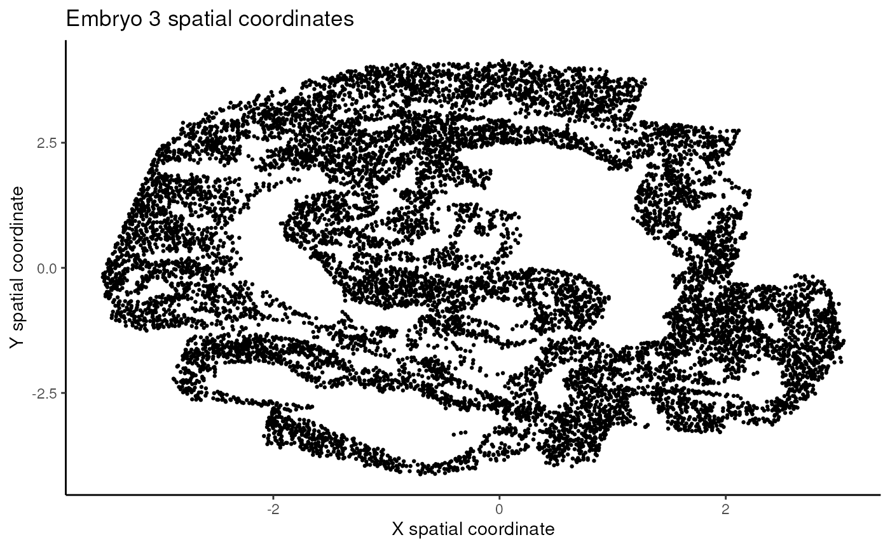
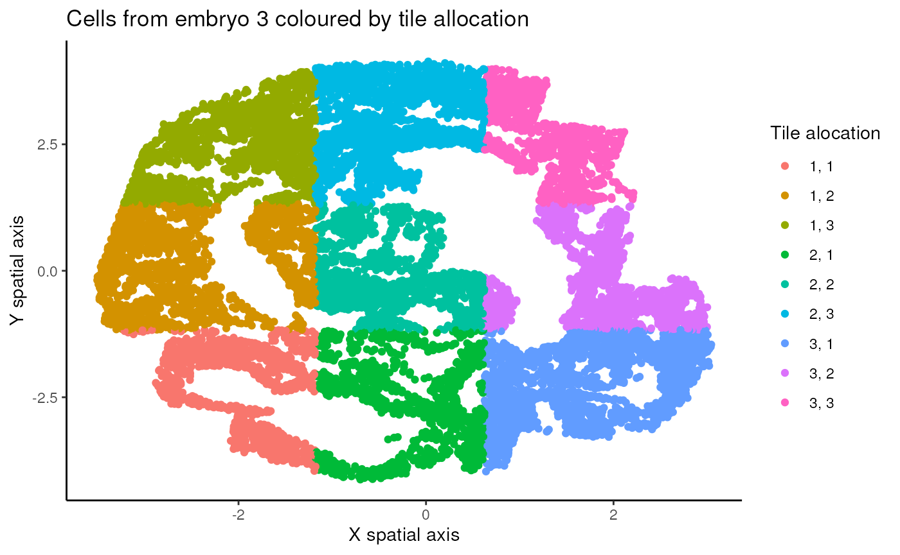
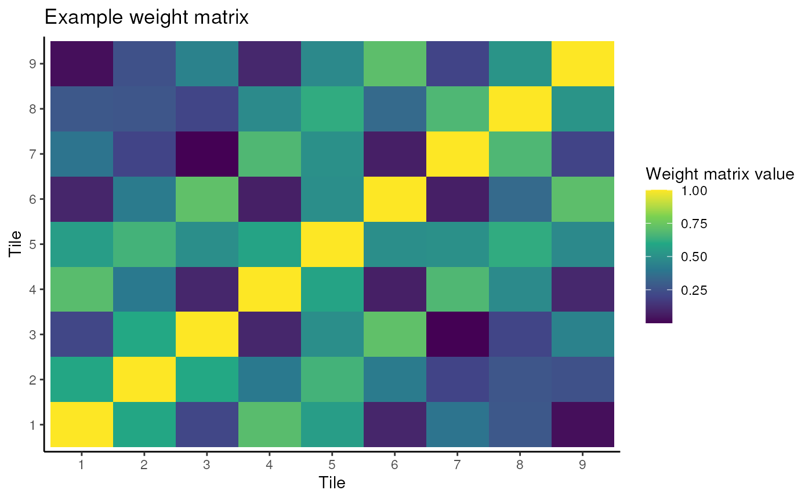
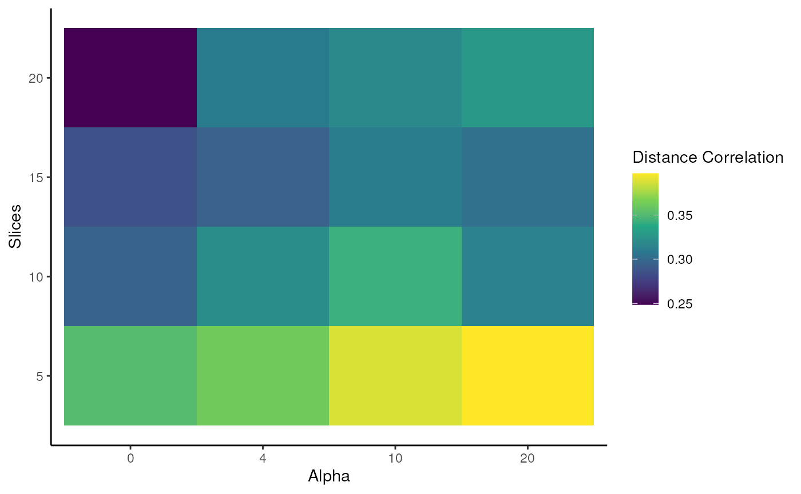
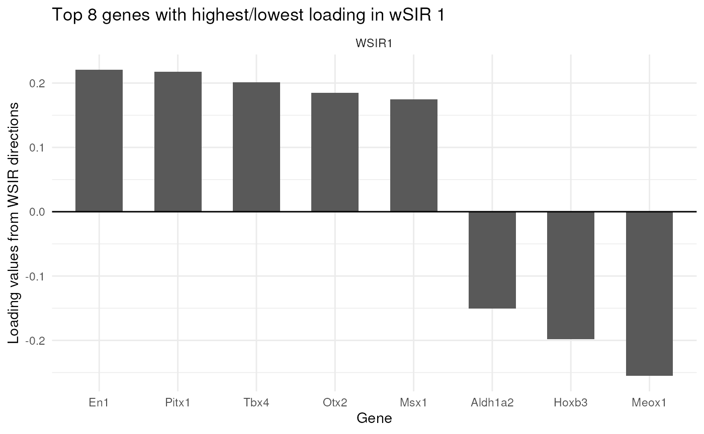
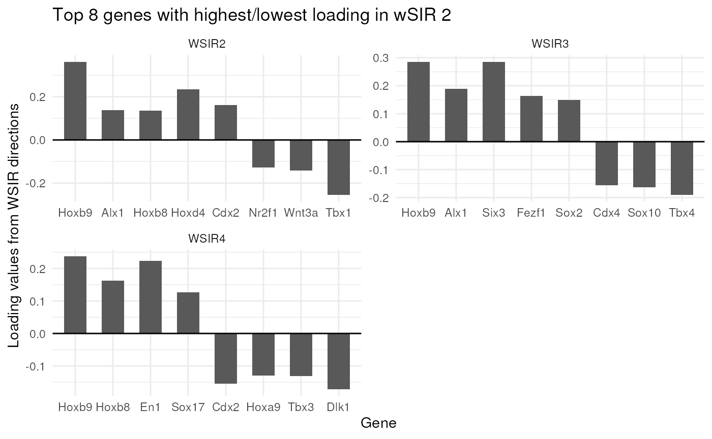
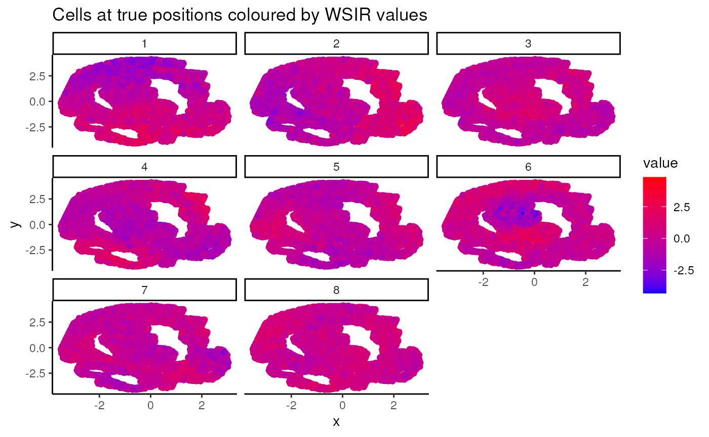
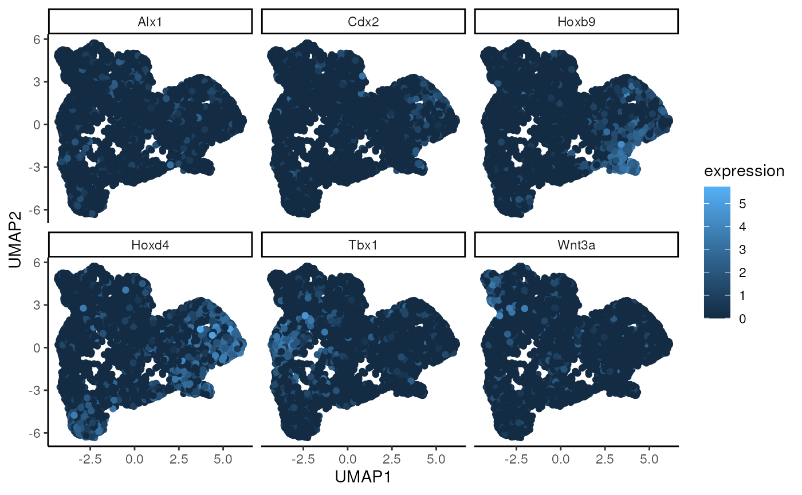
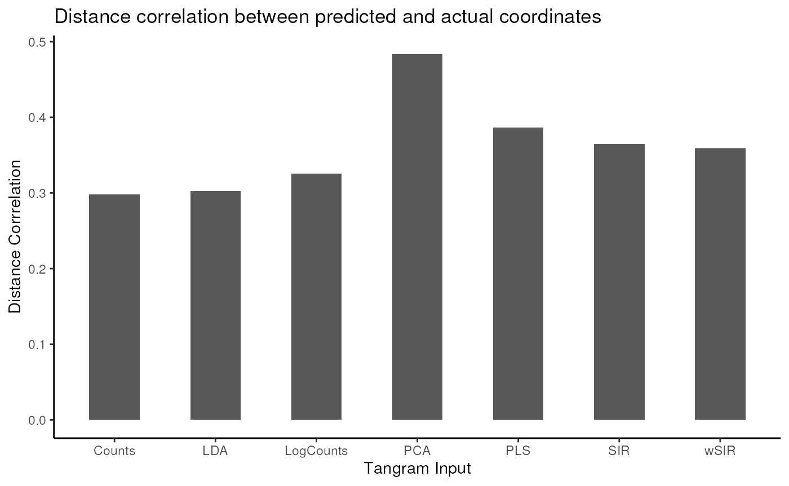

wSIR: Weighted Sliced Inverse Regression for supervised dimension reduction of spatial transcriptomics and single cell gene expression data
Authors
P = presenting, C = contributing to work
Max Woollard (P), Pratibha Panwar (C), Linh Nghiem (C), Shila Ghazanfar (C).
Sydney Precision Data Science Centre, University of Sydney,
Australia
School of Mathematics and Statistics, University of Sydney, Australia
Charles Perkins Centre, University of Sydney, Australia
Contact: mwoo5086@uni.sydney.edu.au
Overview
Single-cell and spatial gene expression data are very high-dimensional, which makes dimension reduction a crucial step in the analysis pipeline. However, many popular examples of dimension reduction methods, such as Principal Component Analysis (PCA), ignore the purpose of a dimension reduction procedure, which is to assist in a specific downstream analysis. wSIR is a supervised dimension reduction method, which makes use of cells’ spatial locations to compute a spatially-informed low-dimensional embedding.
Description
In this workshop, we will introduce the wSIR method for supervised dimension reduction of spatial transcriptomics and single-cell gene expression data. We will explain the method, and go through some example analyses to demonstrate how the method is applied. We will also perform some simple analyses to demonstrate its utility.
Pre-requisites
It is expected that students will have:
- basic knowledge of R syntax, and
- familiarity with single-cell and spatial transcriptomics data.
Setup
Installation
#install.packages(c("ggplot2", "vctrs", "magrittr", "devtools"))
#devtools::install_github("SydneyBioX/wSIR")Load packages
library(BioCAsia2024wSIR) # use the same name, no underscores, as in DESCRIPTION
#> Loading required package: wSIR
#> Loading required package: magrittr
#> Loading required package: ggplot2
#> Loading required package: vctrs
library(ggplot2)
library(vctrs)
library(wSIR)
library(magrittr)
library(dplyr) # for arrange
#>
#> Attaching package: 'dplyr'
#> The following object is masked from 'package:vctrs':
#>
#> data_frame
#> The following objects are masked from 'package:stats':
#>
#> filter, lag
#> The following objects are masked from 'package:base':
#>
#> intersect, setdiff, setequal, unionAcquire data
We will use spatial transcriptomics data for mouse embryos from https://www.nature.com/articles/s41587-021-01006-2 . We will examine how we can apply the wSIR functions to study this data. This dataset will illustrate how you can apply the package functions to your own data.
#data(embryos_data_red) # you don't have a data folder
load(system.file("extdata", "embryos_data_red.RData", package="BioCAsia2024wSIR"))
## files this downloads:
# exprs1
# coords1
# exprs2
# coords2
# exprs3
# coords3wSIR method
wSIR is an extension of the supervised dimension reduction technique of Sliced Inverse Regression (SIR).
SIR is an existing supervised dimension reduction method which works by grouping together the observations with similar values for the response. For spatial transcriptomics data, this means grouping all the cells into a certain number of tiles based on their spatial position. For example, if we use 4 tiles, then the cells in the top right quadrant of the image/tissue go to one group, those in the top left to another, and so on. Each of those groups is then summarised by averaging the expression level of all cells in each group for each of the genes. From there, eigendecomposition is performed on the resulting matrix of tile-gene means, then returning the SIR directions and SIR scores.
The motivation behind wSIR is that SIR only uses each cell’s spatial position when we are separating the cells into the given number of groups/tiles. Once those groups are created, we lose the fact that some groups may be more spatially related (if they come from adjacent tiles) than other groups (if they come from opposite sides of the tissue). wSIR uses a weight matrix to incorporate the spatial correlation between all pairs of cells in the SIR algorithm. This matrix has dimension H*H, where H is the number of tiles, and the (i,j)th entry represents the distance between tiles i and j. This matrix is incorporated into the eigendecomposition step. The wSIR output has the same structure as the SIR output.
Method demonstration
We will begin the workshop by going through some steps in the wSIR algorithm. You do not need to understand the steps in the method to be able to use the package - we only include this to give you an understanding of how it works
Tile creation
The key conceptual difference between SIR and wSIR is in how we estimate E(X|Y).
In both cases, this begins by grouping the cells into tiles according to their spatial positions. We split the data into rectangular tiles, with an equal number of “cuts” in both spatial axes.
We will work here on the spatial coordinates of embryo 3, as this is the sample with the most cells.
ggplot(coords3, aes(x = x, y = y)) +
geom_point(size = 0.5) +
theme_classic() +
labs(x = "X spatial coordinate", y = "Y spatial coordinate") +
ggtitle("Embryo 3 spatial coordinates")
We will then split the data into 9 tiles.
This means assigning each cell to one tile of , where is the tile in the top left, is in the top right, and so on. We do this by assigning all cells in the upper third of the sample (according to spatial position) to one of , then the middle third to one of , and the lower third to one of . This is done so that each of those thirds is as equally populated as possible. Next, a similar procedure is applied to the left third, the middle third, and the right third.
Questions
- Is this procedure ensuring an equal number of cells in all tiles?
- Try modifying the chunk below to allocate the cells to tiles in different ways.
Note the code to do this in the wSIR package has been optimised - the code here is only to demonstrate the concept.
# Define the number of cells in each third of the sample
third1 <- floor(n3/3)
third2 <- floor(n3/3)
third3 <- n3 - third1 - third2
# create new dataframe with row IDs, which we sort by later
with_id <- data.frame(x = coords3$x,
y = coords3$y,
id = c(1:n3))
# sort by x spatial coordinate to find the tile coordinates in the x spatial axis
x_sorted <- arrange(with_id, x)
x_sorted$x_tile <- c(rep(1, third1),
rep(2, third2),
rep(3, third3))
# sort by y spatial coordinate to find the tile coordinates in the y spatial axis
y_sorted <- arrange(x_sorted, y)
y_sorted$y_tile <- c(rep(1, third1),
rep(2, third2),
rep(3, third3))
# sort data back into original order so the tile_allocations vector is in the same order as the expression and coordinates data
id_sorted <- arrange(y_sorted, id)
tile_allocations <- paste0(id_sorted$x_tile, ", ", id_sorted$y_tile)
# Plot cells in spatial positions coloured by tile allocation
ggplot(data.frame(x = coords3$x,
y = coords3$y,
tile = tile_allocations), aes(x = x, y = y, colour = tile)) +
geom_point() +
labs(x = "X spatial axis", y = "Y spatial axis", colour = "Tile alocation") +
theme_classic() +
ggtitle("Cells from embryo 3 coloured by tile allocation")
Weight matrix creation
Once the cells are allocated to tiles, the weight matrix is then
created. For this workshop, we will use the
CreateWeightMatrix function from the wSIR package. Note
this is a hidden function as users do not need to use it, but we will
access it anyway for this workshop.
You can adjust the alpha parameter, which represents the strength of spatial weighting, and then visualise the resulting weight matrix.
Questions
- Observe what happens when you have 0 spatial weighting, or very strong spatial weighting.
- If you had never heard of wSIR and were asked to quantify the spatial proximity of the tiles above in a matrix with values between 0 and 1, how would it look? Is there a value of alpha that would produce such a matrix?
If you want to adjust the tile allocations, it is best to do that in the previous chunk. Then you can simply run this next chunk to view the resulting weight matrix.
# Modify tile allocations to suit the required input for CreateWeightMatrix function.
# As with other components in this section, you won't need to know this to use the wSIR package - it is just included in case you are very curious about how the functions work.
# requires dataframe input with a column named "coordinate". Tile allocations must have 3 "axes": one for each spatial axis, and a third for the sample each cell belongs to. In this case, all cells are from the same sample, which is why I specify 1 in the next line. This would change if we used multiple samples at once, in which case we need to set the weight value between tiles of differing samples to 0.
tile_allocations_df <- data.frame(coordinate = paste0(tile_allocations, ", 1"))
weight_matrix <- wSIR:::createWeightMatrix(coords = coords3,
labels = tile_allocations_df,
alpha = 4) ## Adjust this parameter!
n_tiles <- nrow(weight_matrix)
# Turn weight matrix into a format that can be visualised in a ggplot heatmap
w_mat_df <- data.frame(value = as.vector(weight_matrix),
x = vec_rep_each(c(1:n_tiles), n_tiles),
y = rep(c(1:n_tiles), n_tiles))
ggplot(w_mat_df, aes(x = as.factor(x), y = as.factor(y), fill = value)) +
geom_tile() +
scale_fill_viridis_c() +
theme_classic() +
labs(x = "Tile", y = "Tile", fill = "Weight matrix value") +
ggtitle("Example weight matrix")
The next steps in the wSIR method include more complicated linear algebra, which we will not cover in this workshop.
This is the end of the method demonstration section. Up to now, we hope you have an understanding of how the tiles are allocated, and how the weight matrix will look with varying allocations and spatial weighting strengths.
wSIR parameter exploration
Here, we demonstrate the wSIR function
exploreWSIRParams, which shows the impact of changing the
parameter values on the distance correlation between the wSIR
low-dimensional embedding and the true spatial coordinates. A higher
distance correlation corresponds to a better performance.
Distance correlation is a measure of the correlation between two distance matrices. Ideally, if two cells are spatially close, we would want them to be close in the low-dimensional embedding, and similar for two distant cells - distance correlation is a measure of this. If you’d like more details on this metric, there are many good online resources.
The following chunk has some parameters we you can explore. You can
vary the alpha and slice values that are tuned over, to see the
performance with different combinations. This can take a while to run,
so we suggest you randomly subset some of the data with the variable
subsetted. In practice, this doesn’t change the results of
your study, we only do it as computing the distance correlation can be
quite slow over many cells.
We recommend you don’t adjust nrep or
varThreshold, as this can make it take a very long time to
run. Be aware that the following chunk can take some time to run, so be
careful with what you change!
subsetted = 0.2 # Change this to specify the proportion of the data you want to use for this exploration
rsample <- sample(c(TRUE, FALSE), size = n3, replace = TRUE, prob = c(subsetted, 1-subsetted))
EWP_object <- exploreWSIRParams(X = exprs3[rsample,],
coords = coords3[rsample,],
nrep = 3, # This function computes a random train/test split of the data nrep times
varThreshold = 0.95,
optim_alpha = c(0,4,10,20),
optim_slices = c(5,10,15,20))
#> set up nrep random splits of the data into training and test sets
#> completed runs of wSIR and metric calculation
#> Optimal (alpha, slices) pair: (20, 5)
ggplot(EWP_object$results_dataframe, aes(x = factor(alpha), y = slices, fill = metric)) +
geom_tile() +
theme_classic() +
scale_fill_viridis_c() +
labs(x = "Alpha", y = "Slices", fill = "Distance Correlation")
The key takeaway you will (hopefully) see above is that wSIR has
relatively invariant distance correlation for moderate values of slices
and alpha. This is in contrast to the column representing
alpha = 0, which means there is no spatial weighting at all
(recall the corresponding weight matrix). Why do you think performance
deteriorates with an increasing number of slices when
alpha = 0?
wSIR algorithm
Using the wSIR algorithm itself is quite straightforward. For users,
there is a single function to compute the low-dimensional embedding and
the loadings matrix, which is named wSIR. This function only needs the
gene expression matrix and the spatial coordinates dataframe as input,
though you can specify parameters to the non-default values if desired.
The wSIR function returns a list of results with 5 (named) slots, whose
details can be found at ?wSIR::wSIR.
# wSIR with default parameter values
wsir_object <- wSIR::wSIR(X = exprs3,
coords = coords3)
# wSIR selecting to optimise over a range of parameters using exploreWSIRParams
## Not recommended in practice since wSIR performance is mostly consistent when you select reasonable values for slices and alpha
wsir_object <- wSIR::wSIR(X = exprs3,
coords = coords3,
optim_params = TRUE,
nrep = 3,
optim_alpha = c(0,5,10),
optim_slices = c(8,12,15),
varThreshold = 0.95)
#> set up nrep random splits of the data into training and test sets
#> completed runs of wSIR and metric calculation
#> Optimal (alpha, slices) pair: (10, 8)
# wSIR specifying some parameter values
wsir_obj <- wSIR::wSIR(X = exprs3,
coords = coords3,
alpha = 5,
slices = 10,
varThreshold = 0.95)wSIR application: interpretability
The wSIR package includes some functions to give an insight into what biological information the method is using. These functions are firstly for interpretability, so you can understand which genes are the most important for the low-dimensional space. Secondly, these functions could be used to give more biological understanding, as you can find how genes impact and are impacted by the spatially-aware low-dimensional embedding.
wSIR Top Genes
The findTopGenes function finds and plots the genes with
highest loading in the specified wSIR directions (default is direction
1). If a gene has high loading (in terms of magnitude), it is more
important to the wSIR direction. Since the wSIR directions are designed
to retain information about each cell’s spatial position, the genes with
high loading should be spatially-related genes.
In the plot below, we can see which genes have the highest loading in wSIR direction 1. This is useful as it gives us an intuition about how wSIR creates the low-dimensional embedding. We can see that some of the genes are known spatial genes (e.g. Cdx2, Hox-), which is what we would expect to see.
top_genes_obj = findTopGenes(WSIR = wsir_obj, highest = 8) # create top genes object
top_genes_plot = top_genes_obj$plot # select plot
top_genes_plot # print plot
top_genes_obj = findTopGenes(WSIR = wsir_obj, highest = 8, dirs = 2:4)
top_genes_plot = top_genes_obj$plot
top_genes_plot
Visualising wSIR Scores
The visualiseWSIRDirections function plots each cell at
its spatial position, coloured by its value for each of the specified
wSIR columns. This gives us an understanding of what each column of the
low-dimensional embedding represents.
Below, we visualise the cells at their spatial positions, coloured by each of the 5 wSIR directions The top left plot illustrates how, for this example, wSIR direction 1 captures information about the “y” spatial axis, since cells with higher “y” coordinate have low wSIR1 value, while cells with lower “y” coordinate have higher wSIR1 value. wSIR2 is shown in the next plot over (the one titled “2”), and we can see that wSIR column two appears to capture information about the “x” spatial coordinate. The remaining three wSIR columns all contain information about cell types, which we can tell by the regions of high and low wSIR column values spread across the tissue.
vis_obj = visualiseWSIRDirections(coords = coords3, WSIR = wsir_obj, dirs = 8) # create visualisations
vis_obj
UMAP on low-dimensional embedding
The two functions generateUmapFromWSIR and
plotUmapFromWSIR create and display UMAP dimension
reduction calculated on the wSIR low-dimensional embedding. We can
colour the UMAP plot (where each point represents a cell) by its value
for various genes of interest. This visualises the structure of the wSIR
dimension reduction space, which is useful to gain more intuition about
what the space represents. Specifically, we can see if the wSIR space
contains neighbourhoods of high expression for specific genes, thus
better understanding how this space is made.
To specify which genes we would like to include, we can use the
output from the findTopGenes function from above, which
finds spatially-related genes by ranking those with the highest loading
in relevant wSIR directions. This output is then the value for the
highest_genes parameter. Otherwise, we could also specify
our own genes of interest if there are some specific genes we would like
to visualise. For example, if we wanted to visualise the expression
distribution for Cdx2 and Hoxb4, we could use
genes = c("Cdx2", "Hoxb4") as an argument in
plotUmapFromWSIR (and leave highest_genes
blank).
Below, we use the UMAP function to visualise the wSIR space computed
on the gene expression data from sample 1. We colour each cell by their
values for the 6 genes with highest value in wSIR direction 1 (as found
by the findTopGenes function previously). We can see that
for some of these genes, there are specific regions of high expression
in the UMAP plots, suggesting that the wSIR space separates cells based
on their expression for those genes.
umap_coords = generateUmapFromWSIR(WSIR = wsir_obj)
umap_plots = plotUmapFromWSIR(X = exprs3,
umap_coords = umap_coords,
highest_genes = top_genes_obj,
n_genes = 6)
umap_plots
wSIR application: improving performance
Aside from improving interpretability and aiding biological insight, wSIR can improve modelling performance. For users, you may want to project single-cell gene expression data into a spatially-aware low-dimensional embedding, to which you can apply any machine learning methods (e.g cell-type classification, location prediction, etc).
Here, we first demonstrate how to project new single-cell data into a spatially aware low-dimensional space, using out wSIR object from a previous section.
We will use the gene expression matrix from mouse embryo 1 here.
dim(exprs1)
#> [1] 9792 351
dim(exprs3) # Note that the genes in your spatial and single-cell samples must be the same, but there can be different numbers of cells.
#> [1] 11632 351
exprs1_projected <- projectWSIR(wsir = wsir_obj, newdata = exprs1)
dim(exprs1_projected)
#> [1] 9792 10From just that line, you can now apply downstream analysis to this low-dimensional embedding of embryo 1’s gene expression data.
Here, we will show how this method can be applied to Tangram, a popular deep-learning-based spatial alignment method. Tangram is available here: https://www.nature.com/articles/s41592-021-01264-7 .
For this simulation, we will use embryo 3 as our spatial sample, and embryo 1 as our single-cell sample. The method workflow is detailed below. The concept will be to use the wSIR low-dimensional embedding to predict the spatial coordinates of the single-cell data.

Note that for this workshop, we will not actually compute the Tangram predicted coordinates, as it takes too long to run. We will load in the predicted coordinates which we have already computed, and we will create a results plot from that.
Below loads in 7 matrices, all of dimension n1 by 2, containing the
predicted coordinates using as inputs: PCA, PLS, SIR, wSIR, LDA, counts
and logcounts. The file names are of the form pred_pca_em1,
in that case for the predicted coordinates of embryo 1 using the PCA
low-dimensional embedding as the Tangram input. We also include the
predicted coordinates using just counts or LogCounts as the inputs
(without any dimension reduction applied) as those are the default
inputs for Tangram.
#data(em1_tangram_preds_red) # This loads a list (not vector) of predicted coordinates into your environment, named pred_em1_tangram_red
load(system.file("extdata", "em1_tangram_preds_red.RData", package="BioCAsia2024wSIR"))To evaluate, we will compute the distance correlation between the predicted and the actual coordinates, for the predicted coordinates from all dimension reduction methods. This is not part of the wSIR package, but should demonstrate the effectiveness of using wSIR as a dimension reduction tool to improve downstream analysis.
dim(wsir_obj$scores) # This is the features matrix for the training set
#> [1] 11632 10
dim(coords3) # This is the spatial coordinates for the training set
#> [1] 11632 2
dim(exprs1_projected) # This is the features matrix for the testing set, with which we will use Tangram to predict its spatial coordinates
#> [1] 9792 10
# save predicted coordinates in a list for easy results generation
em1_dcs <- rep(0,7) # initialise empty vector to fill with the distance correlations
i = 0
for (pred in pred_em1_tangram_red) {
print(i)
i = i + 1
em1_dcs[i] <- Rfast::dcor(pred, coords1)$dcor
}
#> [1] 0
#> [1] 1
#> [1] 2
#> [1] 3
#> [1] 4
#> [1] 5
#> [1] 6
tangram_distcor_df <- data.frame(distcor = em1_dcs,
tangram_input = c("LDA",
"wSIR",
"SIR",
"PCA",
"PLS",
"Counts",
"LogCounts"))
ggplot(tangram_distcor_df, aes(x = tangram_input, y = distcor)) +
geom_col(width = 0.5) +
theme_classic() +
labs(x = "Tangram Input", y = "Distance Corrrelation") +
ggtitle("Distance correlation between predicted and actual coordinates")
wSIR application: multiple samples
In the previous section, we used the gene expression data and the spatial coordinates of one spatial sample to project the gene expression data of a different sample into low-dimensional space. However, we may often have access to multiple spatial samples. wSIR is able to incorporate multiple such samples, by setting the weight matrix value for two tiles from different spatial samples to be 0. The code to use, for example, the gene expression and spatial coordinates for embryos 2 and 3 to project the gene expression data of embryo 1 into low-dimensional space is below.
wsir_obj_2_3 <- wSIR::wSIR(X = rbind(exprs2, exprs3),
coords = rbind(coords2, coords3),
samples = c(rep(2, n2), rep(3, n3)), # specify samples
alpha = 4,
slices = 10,
varThreshold = 0.95)
proj1_from23 <- projectWSIR(wsir = wsir_obj_2_3, newdata = exprs1)
dim(proj1_from23) # gene expression data from sample 1 projected into low-dimensional space
#> [1] 9792 11We will not explore it here, but our results (manuscript on the way!) show that wSIR performance improves when you incorporate multiple spatial samples. Therefore, if you are in a situation where you do have multiple spatial samples, it is best to use wSIR and account for the multiple samples as above.
Finish
sessionInfo()
#> R version 4.4.1 (2024-06-14)
#> Platform: x86_64-pc-linux-gnu
#> Running under: Ubuntu 22.04.5 LTS
#>
#> Matrix products: default
#> BLAS: /usr/lib/x86_64-linux-gnu/openblas-pthread/libblas.so.3
#> LAPACK: /usr/lib/x86_64-linux-gnu/openblas-pthread/libopenblasp-r0.3.20.so; LAPACK version 3.10.0
#>
#> locale:
#> [1] LC_CTYPE=en_US.UTF-8 LC_NUMERIC=C
#> [3] LC_TIME=en_US.UTF-8 LC_COLLATE=en_US.UTF-8
#> [5] LC_MONETARY=en_US.UTF-8 LC_MESSAGES=en_US.UTF-8
#> [7] LC_PAPER=en_US.UTF-8 LC_NAME=C
#> [9] LC_ADDRESS=C LC_TELEPHONE=C
#> [11] LC_MEASUREMENT=en_US.UTF-8 LC_IDENTIFICATION=C
#>
#> time zone: Etc/UTC
#> tzcode source: system (glibc)
#>
#> attached base packages:
#> [1] stats graphics grDevices utils datasets methods base
#>
#> other attached packages:
#> [1] dplyr_1.1.4 BioCAsia2024wSIR_2.0.1 vctrs_0.6.5
#> [4] ggplot2_3.5.1 magrittr_2.0.3 wSIR_0.99.3
#>
#> loaded via a namespace (and not attached):
#> [1] rlang_1.1.4 matrixStats_1.4.1
#> [3] compiler_4.4.1 png_0.1-8
#> [5] systemfonts_1.1.0 RcppZiggurat_0.1.6
#> [7] stringr_1.5.1 pkgconfig_2.0.3
#> [9] SpatialExperiment_1.16.0 crayon_1.5.3
#> [11] fastmap_1.2.0 backports_1.5.0
#> [13] magick_2.8.5 XVector_0.46.0
#> [15] labeling_0.4.3 utf8_1.2.4
#> [17] rmarkdown_2.28 UCSC.utils_1.2.0
#> [19] ragg_1.3.3 purrr_1.0.2
#> [21] xfun_0.48 Rfast_2.1.0
#> [23] zlibbioc_1.52.0 cachem_1.1.0
#> [25] GenomeInfoDb_1.42.0 jsonlite_1.8.9
#> [27] highr_0.11 DelayedArray_0.32.0
#> [29] BiocParallel_1.40.0 Deriv_4.1.6
#> [31] broom_1.0.7 parallel_4.4.1
#> [33] R6_2.5.1 bslib_0.8.0
#> [35] stringi_1.8.4 reticulate_1.39.0
#> [37] boot_1.3-31 GenomicRanges_1.58.0
#> [39] jquerylib_0.1.4 Rcpp_1.0.13
#> [41] SummarizedExperiment_1.36.0 knitr_1.48
#> [43] modelr_0.1.11 IRanges_2.40.0
#> [45] Matrix_1.7-1 tidyselect_1.2.1
#> [47] abind_1.4-8 yaml_2.3.10
#> [49] codetools_0.2-20 lattice_0.22-6
#> [51] tibble_3.2.1 Biobase_2.66.0
#> [53] withr_3.0.2 askpass_1.2.1
#> [55] evaluate_1.0.1 desc_1.4.3
#> [57] RcppParallel_5.1.9 pillar_1.9.0
#> [59] MatrixGenerics_1.18.0 stats4_4.4.1
#> [61] generics_0.1.3 S4Vectors_0.44.0
#> [63] munsell_0.5.1 scales_1.3.0
#> [65] glue_1.8.0 tools_4.4.1
#> [67] doBy_4.6.24 distances_0.1.11
#> [69] RSpectra_0.16-2 fs_1.6.4
#> [71] cowplot_1.1.3 grid_4.4.1
#> [73] tidyr_1.3.1 umap_0.2.10.0
#> [75] colorspace_2.1-1 SingleCellExperiment_1.28.0
#> [77] GenomeInfoDbData_1.2.13 cli_3.6.3
#> [79] textshaping_0.4.0 fansi_1.0.6
#> [81] viridisLite_0.4.2 S4Arrays_1.6.0
#> [83] gtable_0.3.6 sass_0.4.9
#> [85] digest_0.6.37 BiocGenerics_0.52.0
#> [87] SparseArray_1.6.0 rjson_0.2.23
#> [89] htmlwidgets_1.6.4 farver_2.1.2
#> [91] htmltools_0.5.8.1 pkgdown_2.1.1
#> [93] lifecycle_1.0.4 httr_1.4.7
#> [95] microbenchmark_1.5.0 openssl_2.2.2
#> [97] MASS_7.3-61